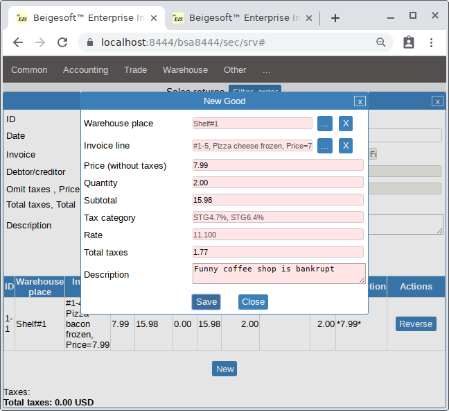
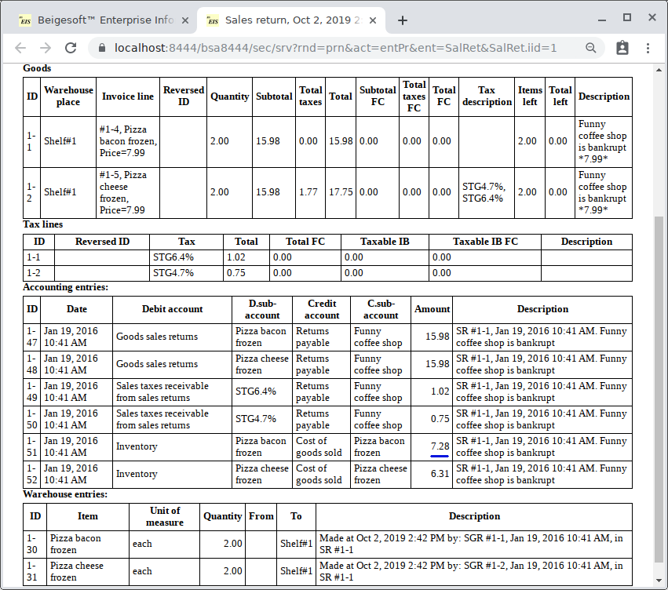

Accounting for sales returns (goods returned by customers).
Keywords: Accounting for sales returns (goods returned by customers).
Bob sold on Jan 18 4 Pizza with bacon frozen and 4 Pizza with cheese frozen to "Funny coffee shop". Bob filled new "Sales invoice" (see Accounting of sales, prepayments, payments tracking, COGS.)
Bob was confirmed on Jan 19 that "Funny coffee shop" is bankrupt, and he has received back (goods return) 2 Pizza with bacon frozen and 2 Pizza with cheese frozen.
Bob filled a new sales return for the returned goods and the sales invoice:

It made these complex accounting and warehouse entries:

* here the COGS accounting entries are made by using the COGS entries from the sales invoice (see previous article), so six pizza with bacon cost is 21.84, so one pizza cost is 21.84/6*2=7.28
* Sales returns are business expenses (deducting the income tax). If according the law of your country the accrual method means that a business expense occurs when you have received the document (the proof of this expense) even though you haven't received the goods yet (in the same day), then switch off Entries source#16 "Sales Return, Debit Goods sales returns per good category, Credit Returns Payable per Customer for subtotal amount." and make these deducting the income tax accounting entries by hand.